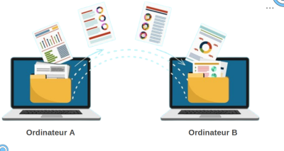
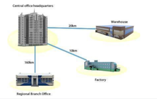
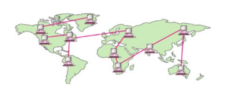
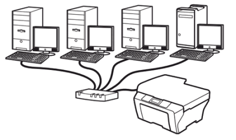
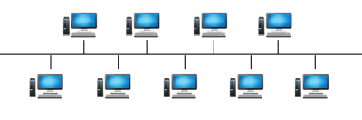
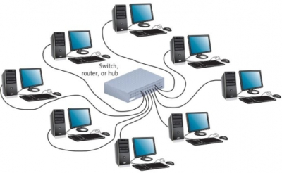
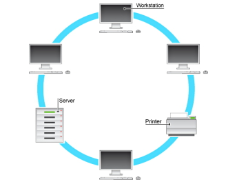

Objectifs
-Définir les réseaux informatiques, leurs protocoles et adresses.
-Identifier les types de réseaux (LAN, MAN, WAN) et leurs topologies (bus, anneau, étoile).
-Analyser les avantages et inconvénients des réseaux et d’Internet.
Notion de réseau
Activité 1
Exemple1
Un réseau social est composé de :
Nœuds : Utilisateurs (personnes, pages, groupes)
Liaisons : Relations (amis, abonnements)
Données : Contenus (messages, posts, vidéos)
Règles : Algorithmes de recommandation, politiques de modération
Exemple2
Un réseau routière est composé de :
Nœuds : villes
Liaisons : routes
Données : voitures
Règles : Règles de circulation
Conclusion
Un réseau est un ensemble des nœuds, reliées par des lignes ou « liens » assurant le transport de certains types d’objets entre ces nœuds.
Réseau en informatique
Les réseaux peuvent être de différentes natures (informatiques, sociaux, électriques, etc.) mais le concept de base reste similaire : relier des éléments pour faciliter l'échange de données ou ressources. |
Définition d’un réseau informatique
C’est un ensemble d’ordinateurs et périphériques, connectés entre eux par des supports de communication, qui assurant le transport de données à communiquer entre les différents nœuds de réseau. | Zoom |
En faisant l'analogie
Notion du protocole
Activité 2
Scénario :
Scénario : Lucas, Emma et Théo veulent jouer aux cartes, mais chacun veut jouer à un jeu différent :
Résultat ?
Solution : Pour bien jouer, ils doivent choisir un seul jeu et suivre les mêmes règles :
Résultat : Maintenant, la partie est claire et amusante ! |
Résultat ?
Personne ne comprend l’autre.
Les cartes volent dans tous les sens.
La partie est impossible.
Solution
Pour jouer ensemble, ils doivent choisir un protocole (un jeu précis) et tous le respecter :
Choix du protocole : Ils optent pour la Bataille.
Règles claires :
On distribue toutes les cartes.
Chacun pose une carte face visible.
La plus haute valeur gagne la levée.
Résultat : La partie est fluide et amusante !
Conclusion
Un protocole, c'est :
"Un ensemble de règles que tout le monde doit suivre pour communiquer ou travailler ensemble sans problème."
Protocole en réseau informatique
Les protocoles réseau sont des règles et des normes qui permettent à des ordinateurs de communiquer entre eux et de partager des données.
Les protocoles réseau sont essentiels à la communication entre les ordinateurs, car ils permettent l’envoi de messages standardisés et efficaces. Sans protocoles réseau, les ordinateurs auraient du mal à communiquer de manière cohérente et fiable.
Les Composants d'un Réseau Informatique
Introduction
Un réseau informatique est constitué d’éléments matériels et logiciels qui permettent aux appareils de communiquer entre eux.
Composants Matériels (Hardware)
Ordinateurs/PC : Postes clients ou serveurs.
Smartphones/Tablettes : Appareils mobiles connectés.
Serveurs : Machines qui stockent et partagent des données
Composants Logiciels (Software)
Protocoles de Communication
Systèmes d'Exploitation Réseau
Windows Server, Linux : Gèrent les serveurs.
Équipements d'Interconnexion
Câbles réseau :
Câble Ethernet (RJ45) → Pour connexion filaire.
Fibre optique → Pour les longues distances et haut débit.
Switch/Commutateur : Relie plusieurs appareils dans un LAN.
Routeur : Connecte plusieurs réseaux (ex : LAN à Internet).
Point d’accès Wi-Fi : Permet les connexions sans fil.
Typologie d'un réseau informatique
Activité 3
1. Quel matériel utilise-t-on pour réaliser un réseau dans notre salle informatique
2. On suppose que toutes les salles dans notre Lycée sont équipées par des réseaux informatiques.
3. Est-ce qu'il est possible de connecter tous les réseaux entre eux ?
4. Quel matériel utilise-t-on ?
5. Est-ce que il est possible de lier le réseau de notre Lycée avec les autres collèges dans notre ville?
6. Comment appel-t-on ce type de réseau.
Activité 2: WAN
Dans le cadre de l'ouverture de notre collège sur le monde extérieur. On veut lier le réseau de notre collège avec un établissement en France afin de communiquer et de partager des documents.
Est-ce que c'est possible ?
Résumé des Types de Réseaux
Les réseaux sont classés en différents types selon leur taille.
La taille d’un réseau est caractérisée par le nombre de machines qui y sont
connectées, alors que son étendu est désigné par la distance entre eux, et leur
vitesse de transfert. Il existe trois types différents de réseaux dont chacun a ses
spécifiques techniques.
LAN
LAN (Local Area Network) : Réseau local, limité à un bâtiment ou un campus (ex. Wi-Fi domestique, réseau d'entreprise , |
MAN
| Zoom |
WAN
| Zoom |
Les avantages d'un réseau informatique
Activité 4
1. Notre salle est constitué de combien d'ordinateurs? 2. On a besoin de combien d'imprimante pour pouvoir imprimer nos documents ? 3. Si un utilisateur sur le poste 1 veut imprimer un document comment procédera-t-il? | Zoom |
Conclusion
Avantage :
1. Partage des Ressources
Économie de matériel : Une seule imprimante, un seul serveur, etc. peuvent être utilisés par tous.
Accès aux mêmes fichiers : Pas besoin de dupliquer les documents sur chaque ordinateur.
2. Communication Facile
Échange rapide de données (messages, fichiers) entre utilisateurs.
Collaboration en temps réel : Travail sur les mêmes documents à distance.
Topologie d'un Réseau Informatique
Introduction
La topologie d'un réseau informatique fait référence à la manière dont les dispositifs et équipements sont interconnectés physiquement ou logiquement dans un réseau. Elle influence les performances, la fiabilité et l'évolutivité du réseau.
Topologie en bus
| Zoom |
Topologie en étoile
| Zoom |
Topologie en anneau
| Zoom |
Vidéo Récapulatif
Vidéo Récapulatif
Impossible d'accéder à la ressource audio ou vidéo à l'adresse :
La ressource n'est plus disponible ou vous n'êtes pas autorisé à y accéder. Veuillez vérifier votre accès puis recharger la vidéo.
Evaluation
Que signifie un réseau informatique?
Un groupe d’ordinateurs reliés sans possibilité de communication entre eux.
Un système conçu uniquement pour stocker des données sans interaction entre les utilisateurs.
Un ensemble d’ordinateurs et d’équipements connectés permettant l’échange d’informations et le partage de ressources.
Que signifie un réseau informatique?
Un groupe d’ordinateurs reliés sans possibilité de communication entre eux.
Un système conçu uniquement pour stocker des données sans interaction entre les utilisateurs.
Un ensemble d’ordinateurs et d’équipements connectés permettant l’échange d’informations et le partage de ressources.
Quelle topologie ressemble à une ligne droite où tous les appareils sont connectés à un câble principal?
Topologie en étoile
Topologie en anneau
Topologie en bus
Quelle topologie ressemble à une ligne droite où tous les appareils sont connectés à un câble principal?
Topologie en étoile
Topologie en anneau
Topologie en bus
Dans une topologie en anneau, comment les données circulent-elles ?
En ligne droite d'un appareil à l'autre.
En cercle, d'un appareil à son voisin
Directement vers un point central.
Dans une topologie en anneau, comment les données circulent-elles ?
En ligne droite d'un appareil à l'autre.
En cercle, d'un appareil à son voisin
Directement vers un point central.
Dans une topologie en étoile, que se passe-t-il si le point central tombe en panne?
Tout le réseau est affecté.
Les données circulent en sens inverse.
Rien, le réseau continue de fonctionner
Dans une topologie en étoile, que se passe-t-il si le point central tombe en panne?
Tout le réseau est affecté.
Les données circulent en sens inverse.
Rien, le réseau continue de fonctionner